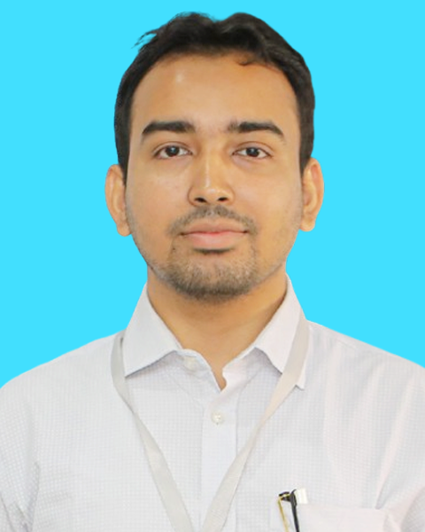

Rezaul Islam
Institute of Water and Flood Management (IWFM)
Bangladesh University of Engineering and Technology (BUET)
Dhaka, Bangladesh
Email: rezaul90@iwfm.buet.ac.bd
About
Rezaul Islam is currently working as a Lecturer at the Institute of Water and Flood Management (IWFM), Bangladesh University of Engineering and Technology (BUET), where he has been serving since December 2023. He completed his B.Sc. in Civil Engineering at BUET in 2023, majoring in Structural Engineering, and he is currently pursuing an M.Sc. in Civil and Structural Engineering at BUET.
His work and research interests span coastal engineering, wave mechanics, wave–structure interaction, structural mechanics, computational fluid dynamics, hydrological modelling, and remote sensing and GIS.
Education
M.Sc. in Civil and Structural Engineering
B.Sc. in Civil Engineering
Major: Structural Engineering.
Research and Skills
- Remote Sensing and GIS Applications
- Computational Fluid Dynamics (CFD) and Numerical Modeling
- Hydrological Modeling
- Coastal Engineering and Wave–Structure Interaction
- Wave Mechanics and Coastal Hydraulics
- Hydraulic Structures and Coastal Protection Infrastructure
- Structural Mechanics and Finite Element Analysis
Performance Evaluation of RC Moment Frames Using Nonlinear Pushover Analysis
Abstract: Bangladesh is located in a seismically active area where deadly earthquakes have happened historically numerous times, prompting building designers to consider the seismic reaction of the buildings. Nonlinear Static Analysis enables a better understanding of the performance of the structures under earthquakes. In this thesis, Nonlinear Static Analysis or Pushover Analysis has been carried out to study the performance of Reinforced Concrete Structures designed as per BNBC (2020). The main focus of this research is an RC building in Sylhet that is situated in seismic zone IV. The structure was designed and analyzed in accordance with BNBC (2020). Utilizing ETABS, the performances were assessed for serviceability, design, and maximum earthquakes. Then it broadened its reach to parametric studies, such as performance assessments of RC moment frames by modifying seismicity, material properties and geometric features. It was discovered that buildings that had been correctly evaluated and planned in accordance with specifications of BNBC (2020) met all the requirements. It has been found that increasing concrete strength reduces the deformation of the building. Finally, all results have been summarized and future scope of studies has been recommended.
Structural Performance of Different Seawall Geometries Under Hydrodynamic Wave Action
Research Focus: Numerical investigation of the structural performance of different seawall geometries subjected to hydrodynamic wave loading. The study combines Computational Fluid Dynamics (CFD) using ANSYS Fluent and Finite Element Analysis (FEA) using ANSYS Mechanical to evaluate wave-pressure distribution, overtopping characteristics, stress distribution, deformation, and structural responses.
Numerical Tools: ANSYS Fluent, ANSYS Mechanical, CFD-Post
- Structural Analysis and Design: ANSYS Mechanical (Static Structural, Transient Structural), ETABS, SAP2000
- Computational Fluid Dynamics (CFD): ANSYS Fluent, CFD-Post
- GIS and Remote Sensing: ArcGIS, raster analysis, GIS-based spatial analysis
- Hydrological Modeling: HEC-HMS
- Programming and Scientific Computing: Python, C++, MATLAB, Mathematica
- Machine Learning and Data Analysis: Machine learning, Python-based data analysis, Microsoft Excel
- Climate and Geospatial Data Processing: NetCDF processing, climate data analysis, geospatial data processing
Publications
Journal Articles
Conference Articles
Research Projects
01. Systems Approach for Creating Sustainable Landscape and Resilient Community in Riverine and Coastal Socio-Ecological System
02. Implementation of Geospatial Technique in Flood and Drought Monitoring for the Safety of Nuclear Installations
03. Anticipatory Action for Health in a Changing Climate
04. Application and Updating of the CCM for Cyclone Impact Prediction and the DFRM for the Risk-based Riverine Flood Warning in Bangladesh
05. Enhancing Climate Resilience of Coastal Areas of Bangladesh with Nature-Based Solutions
Advisory Services
01. Hydro-Morphology Study of Bridges under Dhaka and Mymensingh Divisions
Professional Experience
Lecturer
Institute of Water and Flood Management (IWFM)
Bangladesh University of Engineering and Technology (BUET)
Teaching
Co-Instructor: Post graduate seminar course for APRIL-2025 Semester, IWFM, BUET.
Honors and Awards
- University Merit Scholarship, BUET – Awarded for academic excellence in undergraduate studies.
- Dean's List Award, Department of Civil Engineering, BUET – Awarded for academic excellence across all four undergraduate levels (I–IV).
Involvements
ICWFM 2027
Role: Assistant Organizing Secretary
ICWFM 2025
Role: Assistant Organizing Secretary
Contact
Rezaul Islam
Lecturer, Institute of Water and Flood Management (IWFM)
Bangladesh University of Engineering and Technology (BUET)
Dhaka, Bangladesh
Room number-314, 2nd floor, IWFM, BUET
Email: rezaul90@iwfm.buet.ac.bd